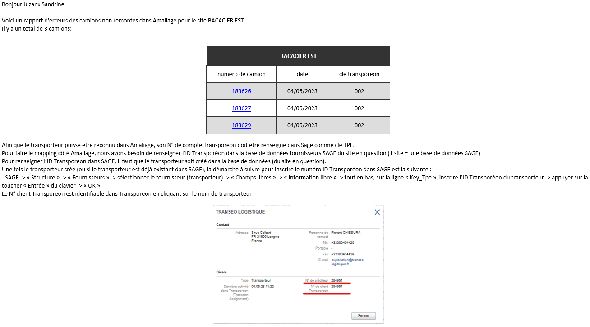
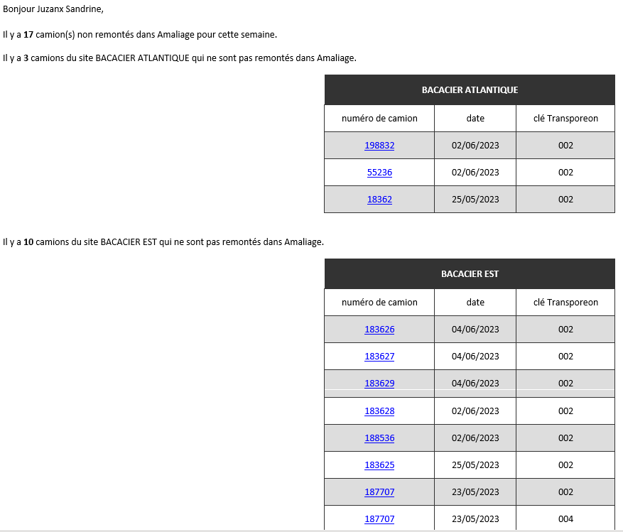

Mission 1er stage : Mail automatique
Contexte :
Mon projet de stage a été réalisé seul, j'ai travaillé sur une version de test de l'intranet de l'entreprise.
Pendant mon stage j'avais un projet qui avait comme objectif de récupérer le nombre d'erreur d'ordre de fabrication(OF) et de les envoyer par mail aux personnes concernées. Tout en précisant le plus d'information par rapport à cet OF.
Les erreurs d'OF pouvait-être recensé sur différent site, donc il fallait pouvoir les rediriger aux bonnes personnes de l'entreprise.
J'ai pu commencer mes tests sur une page web pour pouvoir vérifier si mes requêtes étaient correctes et si mes tests fonctionnaient comme voulu.
La création et la lecture de la base de donnée a pu se faire grâce au logiciel microsoft sql server, et les tests de boites mail sur outlook.
Environnement technologique :
- visual studio code
- microsoft sql server
- outlook
- bureau à distance (environnement de développement)
- PHP
- mysql
- HTML / CSS
compétence mobilisée :
- B1.2.3 : Traiter des demandes concernant les applications
J'ai mis un certain temps avant de comprendre où était situé toutes les informations dans le code et dans la base de donnée(BDD).
J'ai dû développer un système permettant de récupérer les informations qui m'étaient nécessaire(numéro de camion, date et un identifiant). Afin de pouvoir les transmettre par mail à une liste de personne disponible dans la base de donnée. J'ai dû faire en sorte que les informations que je renvoyais correspondaient bien à ceux qui avaient une erreur et donc possédait un identifiant égale à 002.
Je devais réaliser 2 mails :
- l'un récupère les erreurs du jour précédant et les envoyés chaque jour chaque site avait ses erreurs.
- l'autre envoyé en début de semaine toutes les erreurs de la semaine passé et de tous les sites.

